地政学
エレバンは閉じた国境、ロシアとの安全保障、欧州志向、イラン回廊、ナゴルノカラバフ後の難民を抱える首都です。山に囲まれた内陸国の外交と交通が、広場、空港、政府庁舎に集まる街です。緊張も近い都市です。
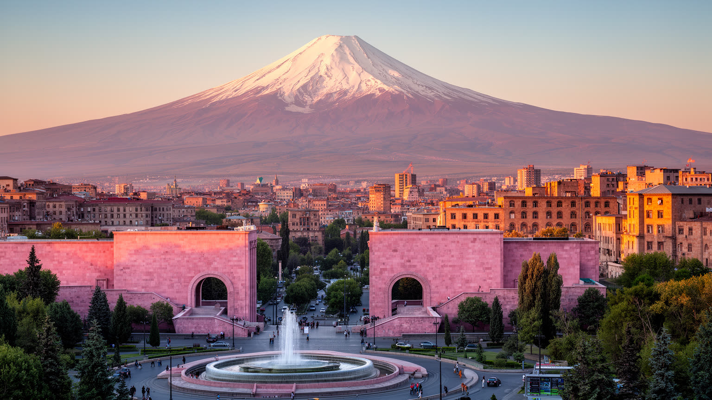
🇦🇲 アルメニア / エレバン市 / World City Atlas
アララト山を望む高原の首都です。古代の記憶、ソ連期の都市計画、共和国広場、カフェ文化、虐殺追悼、IT産業、ディアスポラの送金と帰還が、ピンク色の石の街路に重なります。
都市の骨格
エレバンは、アルメニア国家の行政、教育、文化、金融、IT、交通が集中する首都です。国境閉鎖、ディアスポラ、虐殺の記憶、ソ連都市計画、南コーカサスの緊張、乾いた高原の暮らしが、都心のカフェと広場の背後で響きます。
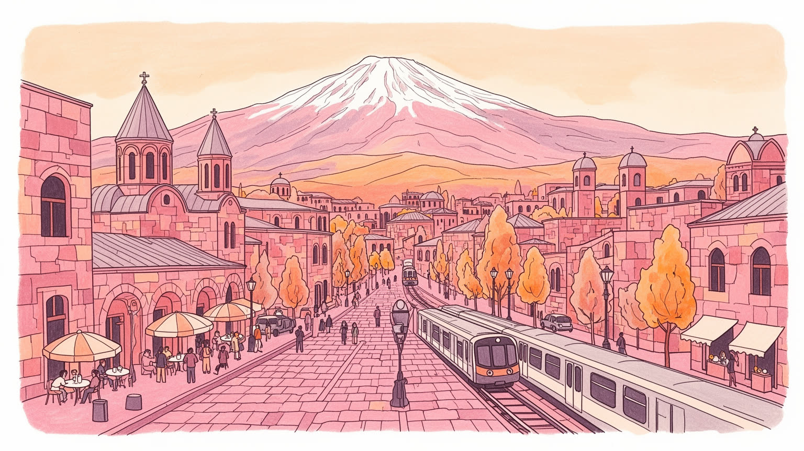
エレバンは閉じた国境、ロシアとの安全保障、欧州志向、イラン回廊、ナゴルノカラバフ後の難民を抱える首都です。山に囲まれた内陸国の外交と交通が、広場、空港、政府庁舎に集まる街です。緊張も近い都市です。
行政、IT、金融、観光、食品加工、建設、教育、小売が雇用を作ります。海外送金と帰還人材、若い技術者、露店、タクシー、公共部門が並び、賃金上昇と家賃高騰が家計を揺らします。技能も生活を大きく左右します。
アルメニア使徒教会、合唱、古写本、共和国広場、カスケード、カフェ、ジャズ、映画、追悼の儀礼が街を形づくります。信仰は観光名所ではなく、家族、祝祭、喪、離散の記憶を結ぶ日常の言葉です。祈りも近い街です。
旅行者はアララト山の眺め、広場、博物館、露店市場、近郊修道院を巡ります。住民は水、暑さ、通勤、住宅費、教育、兵役の不安、帰還者の受け入れと向き合い、乾いた高原で暮らしを整えます。歩いて知る首都です。
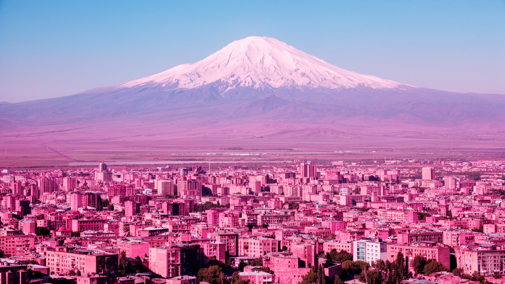
エレバンを歩くと、街の多くの場所からアララト山が視界に入ります。山はアルメニア人の歴史と信仰を支える象徴ですが、現在はトルコ領にあり、国境は閉じています。この距離の近さと政治的な遠さが、エレバンの地理感覚を決定づけます。市街はアララト平野の北東端、フラズダン川の谷と周囲の丘陵に広がり、乾いた高原の光、凝灰岩の色、夏の強い日差しが街の印象を作ります。空港、幹線道路、鉄道、近郊の農地は、内陸国アルメニアの移動と供給を支えますが、国境閉鎖や地域紛争によって選べる経路は限られます。アララトの眺めは美しい観光資源であると同時に、失われた土地、離散、外交、国家の記憶を毎日呼び戻す風景です。地形は都市の生活にも影響します。谷筋と丘の高低差は道路と住宅地を分け、冬の寒さと夏の暑さは建物の断熱、水道、緑地の価値を高めます。エレバンの地理を読むことは、一枚の山の写真を読むことではありません。見えるのに触れられない山、近いのに開かない国境、乾いた大地の水の配分、丘の上から都心へ下りる通勤を、同じ都市条件として見ることです。この視界は、教室の地図、家庭の会話、観光客の写真、外交ニュースを一つに結びます。夕方の霞も、国境の近さを静かに思い出させます。アララトは背景ではなく、街の記憶と政治と日常を結び続ける方角です。
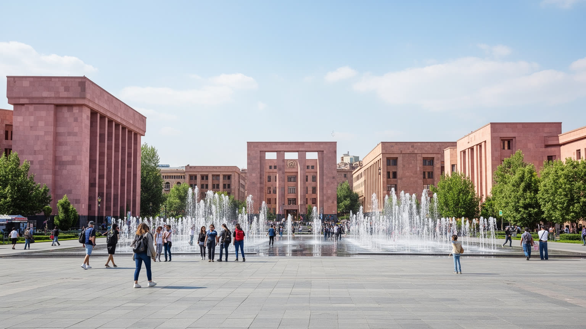
共和国広場は、エレバンが首都であることを最も分かりやすく示す空間です。楕円形の広場を囲む政府庁舎、博物館、ホテル、石造のアーケードは、ソ連期の計画都市がアルメニアの石材と装飾を取り込みながら作った国家の舞台です。昼は官庁街と観光地として動き、夜は噴水、散歩、写真、家族連れ、抗議集会、祝祭が重なります。広場は権力を見せる場所であると同時に、市民が国家へ声を届ける場所でもあります。近年の政治変動、戦争後の抗議、追悼、選挙の緊張は、テレビ局やオンラインメディアの画面だけでなく、この広場に集まる人の数と表情に現れました。広場の美しさは整ったファサードだけでは測れません。公共空間として誰が座れるか、警備と自由がどう折り合うか、観光客の撮影と市民の政治参加が共存できるかが、首都の成熟を示します。周辺にはカフェ、地下道、銀行、土産物店、花売り、交通の流れがあり、国家の象徴は毎日の買い物や待ち合わせと接しています。共和国広場を見ると、エレバンの都市計画が単なる記念碑づくりではなく、政治、観光、日常の歩行を一つの平面に置く試みだったことが分かります。広場は静かな石の空間に見えても、アルメニア社会が危機や希望を共有する時、すぐに声の集まる場所へ変わります。夜は噴水の音と音楽が人を戻します。首都の中心は、建物よりもそこへ集まる人々によって更新されます。
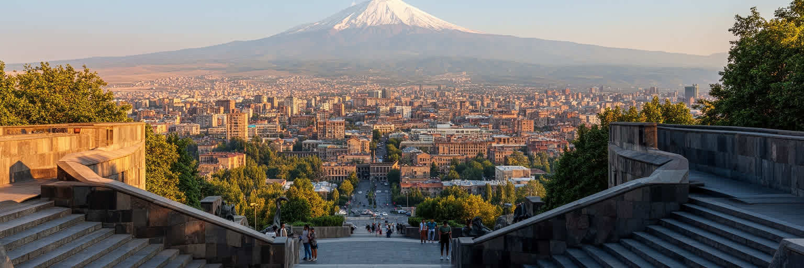
カスケードは、エレバンの斜面を都市の文化装置へ変えた場所です。巨大な階段、彫刻、庭、展示空間、カフェ、丘上の眺めは、ソ連期に構想された都市軸を独立後の現代美術や民間寄付と結び直しています。下から上へ歩くと、都心のカフェ街、オペラ周辺、共和国広場、アララトの遠景が少しずつ重なり、都市が平面ではなく段差のある舞台として見えてきます。観光客には写真を撮る名所ですが、住民にとっては散歩、デート、子どもの遊び、夜の待ち合わせ、野外演奏、階段トレーニングの場でもあります。カスケードの価値は、階段そのものより、公共空間と文化消費の距離を近づけた点にあります。一方で、周辺の高級化、飲食店の価格、住宅開発、歩きやすさ、障害のある人や高齢者の利用しやすさは難しい論点です。文化が都市を開く力になるためには、展示や彫刻が限られた層の装飾で終わらず、学校、若者、家族、地方から来た人にも届く必要があります。カスケードは未完の部分も抱えていますが、その未完さもエレバンらしい。国家の記憶が重い都市で、現代美術と日常の運動が同じ階段を共有することは、未来を軽やかに想像する方法でもあります。上へ登る身体の感覚が、街を遠くから眺め直す視線を作ります。夕方には階段そのものが大きな公共の席になり、アイスクリームを持つ子ども、学生、観光客の声が石に反響します。
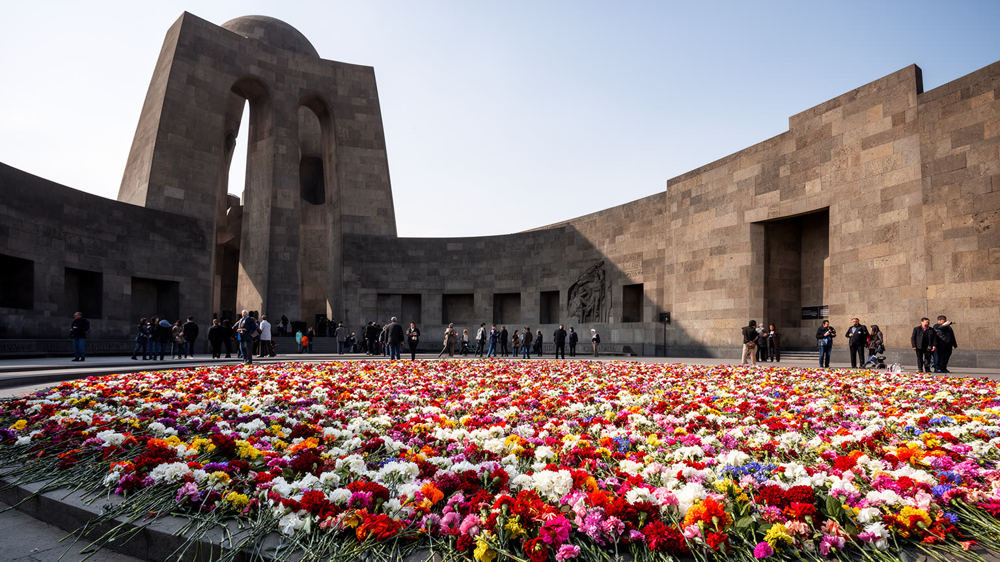
エレバンの都市理解に、アルメニア人虐殺の記憶は欠かせません。ツィツェルナカベルトの丘にある記念施設は、犠牲者を悼む場所であり、ディアスポラ、国家、家族史を結ぶ場所でもあります。毎年四月二十四日には多くの人が花を手に歩き、沈黙の列が都市の時間を変えます。追悼は過去の出来事を保存する儀式であるだけでなく、現在の外交、教育、国際承認、家族の語り、教会の祈りに深く関わります。エレバンでは、記憶は博物館の中に閉じられていません。姓、故郷の名前、料理、歌、学校の授業、海外の親族との会話、戦争後の不安の中に続いています。この記憶を観光のチェックポイントとして消費すると、都市の深い痛みを見落とします。重要なのは、追悼が住民の生活を暗くするだけではなく、離散した人びとを結び、言語や文化を守り、政治的な要求を形にする力にもなってきたことです。一方で、記憶が強いほど、現在の多様な声や隣国との関係をどう語るかは難しくなります。エレバンを読むには、痛みを単純な民族物語へ閉じ込めず、喪失、正義、教育、和解の困難、次世代の生活を一緒に見る必要があります。丘では子どもが親に花の意味を尋ね、高齢者は失われた村名を静かに口にします。花を置く行為は、過去への敬意であると同時に、失われた世界を記憶の中で生かし続ける都市の日常です。
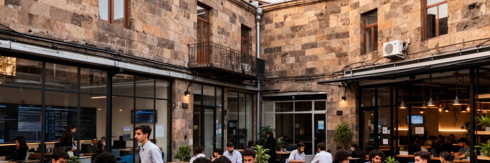
エレバンの近年の変化を読むには、IT産業とディアスポラを外せません。ソフトウェア開発、ゲーム、半導体設計、フィンテック、教育系スタートアップ、共同作業空間は、内陸の小国が世界市場へ直接つながる道を開いています。英語、ロシア語、アルメニア語を行き来する若い技術者、海外経験を持つ帰還者、ディアスポラ投資、国際企業の拠点が、都心のカフェやオフィスに新しい雇用を作ります。二〇二二年以降はロシアからの移住者や企業の流入もあり、住宅価格、賃金、サービス、言語環境に急な変化が生まれました。技術産業は希望を語りやすい一方で、都市全体の不平等も広げます。高い給与を得る人と、公共部門、小売、清掃、タクシー、教育現場で働く人の生活感覚は大きく違います。家賃が上がれば、若い家族や学生は中心部から押し出されます。大学、プログラミング教室、英語塾は上昇の通路になりますが、授業料や端末の差も残ります。エレバンのディアスポラとの関係も、単なる送金や愛国心ではありません。海外の知識、資金、政治ロビー、観光、帰還の夢は都市を支えますが、現地の生活費や雇用の現実とずれることもあります。IT都市としてのエレバンを見るなら、成功した起業家だけでなく、教育格差、女性技術者、地方から来る学生、公共交通、住宅政策を一緒に考える必要があります。外へ開く力が、内側の暮らしを安定させられるかが、この都市の次の焦点です。
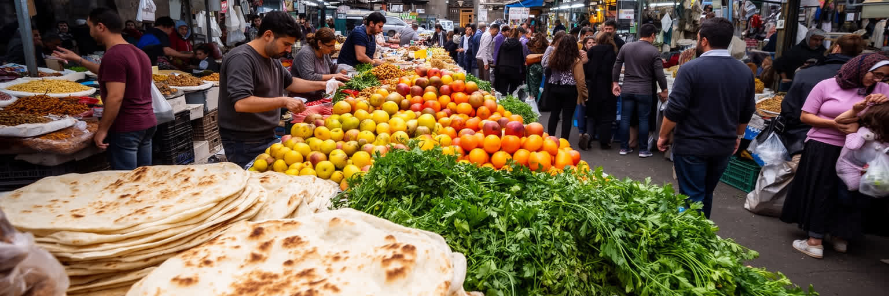
エレバンの食文化は、乾いた高原の農産物、家庭料理、ディアスポラの記憶、都市のカフェ文化が混ざってできています。市場にはドライフルーツ、ナッツ、香草、チーズ、ラヴァシュ、肉、蜂蜜、果物、スパイス、ワイン、ブランデーが並び、近郊の村や国内各地の産品が首都の食卓へ集まります。グム市場や露店、ヴェルニサージュの工芸品市を歩くと、観光客向けの土産、日常の買い物、値切り交渉が同じ通路で重なることが分かります。食はアルメニアらしさを分かりやすく伝えますが、それは固定された伝統ではありません。ソ連期の供給、独立後の困難、海外移住、帰省、近年の観光ブームが、味と店の形を変えてきました。レストランの洗練は都市の魅力を高める一方、中心部の価格上昇は住民の外食や市場利用を変えます。市場で働く人は、早朝の仕入れ、保管、値段交渉、観光客への説明、家族経営の長時間労働を担います。食を通じてエレバンを見ると、国家の記憶だけではなく、毎日の収入、農村とのつながり、季節の水不足、家族の祝宴が見えてきます。ラヴァシュを焼く音、コーヒーの香り、果物の甘さ、炭火の煙、ブランデー工場の甘い匂いは、都市が過去を食べられる形にしている場面です。皿の上には、土地の乾きと人の移動が同時に乗っています。市場は観光名所である前に、首都の胃袋です。
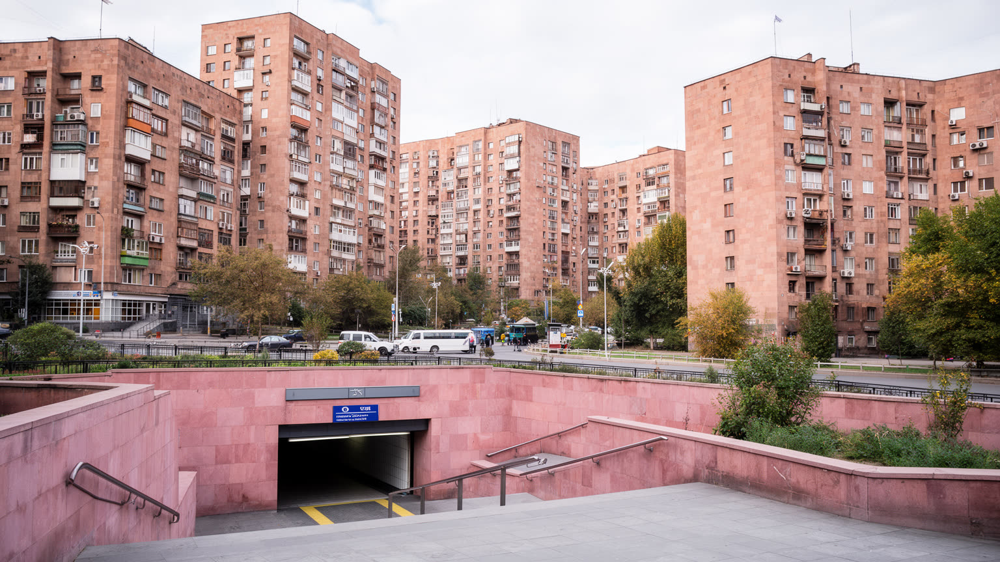
今日のエレバンの骨格は、二十世紀の都市計画によって大きく形づくられました。建築家アレクサンドル・タマニャンの計画は、放射状と環状の道路、広場、文化施設、緑地、凝灰岩の統一感を通じて、近代的な首都を作ろうとしました。ソ連期の集合住宅、地下鉄、工場、教育機関、劇場、広い大通りは、現在も都市の移動と生活を支えています。しかし計画都市は完成した模型ではありません。独立後の市場経済、土地の私有化、建設ブーム、駐車需要、広告、カフェのテラス、老朽化したインフラが、元の秩序を少しずつ変えています。中心部では新しい高層住宅や商業施設が増え、歴史的建物の保存と不動産利益の衝突が起きます。郊外の集合住宅では、エレベーター、断熱、暖房、緑地、子どもの遊び場、高齢者が休めるベンチの維持が暮らしの質を左右します。ソ連都市計画を懐かしむだけでは、管理の硬さや政治的支配を見落とします。反対に、すべてを古いものとして壊せば、歩ける通り、公共施設、街路樹、広場の財産を失います。エレバンを読むには、計画された首都の美しさと、その上で住民が店を開き、車を置き、ベランダを改造し、広場で抗議する現実を一緒に見る必要があります。学校帰りの子ども、年金生活者、買い物袋を持つ人の動線が、図面を毎日調整します。ピンク色の石の秩序は、日常の改変を受け入れながら、首都の輪郭を保ち続けています。
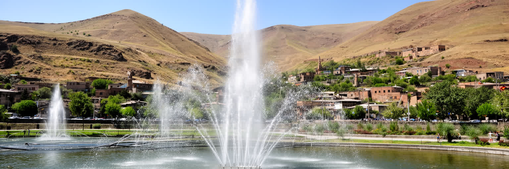
エレバンの気候は、都市の暮らしを強く形づくります。夏は乾いて暑く、日差しは強く、冬は冷え込みます。街路樹、噴水、飲み水、日陰、建物の断熱、暖房、山からの風は、観光の快適さだけでなく住民の健康と家計に関わります。高原の都市であるエレバンは、水の豊かさを当然のものとして扱えません。フラズダン川、地下水、貯水、周辺農地、老朽化した水道、漏水、庭や公園への散水は、都市の成長と気候変動の中で管理が問われます。夏の暑さが厳しくなるほど、中心部の石張りや車の多い道路は熱をため、子どもや高齢者、屋外労働者に負担をかけます。カフェのテラスや夜の散歩は都市の魅力ですが、その裏では清掃員、警備員、建設労働者、露店商が暑さの中で働いています。気候対策は大きな環境政策だけではありません。歩道の木陰、公共の水飲み場、涼しいバス停、断熱改修、低所得世帯の暖房費支援、川辺の再生が日常を変えます。乾いた光と熱い石の匂いは印象的ですが、乾きは水の公平を問います。観光客が夕方の広場を快適に歩ける都市であるためには、昼の暑さを受ける住民の生活も守られなければなりません。庭を潤す水と飲み水の優先順位も問われます。水道の信頼も暮らしを支えます。水と気候を読むと、石の首都の背後にある見えにくいインフラと、自然条件への細かな適応が浮かび上がります。
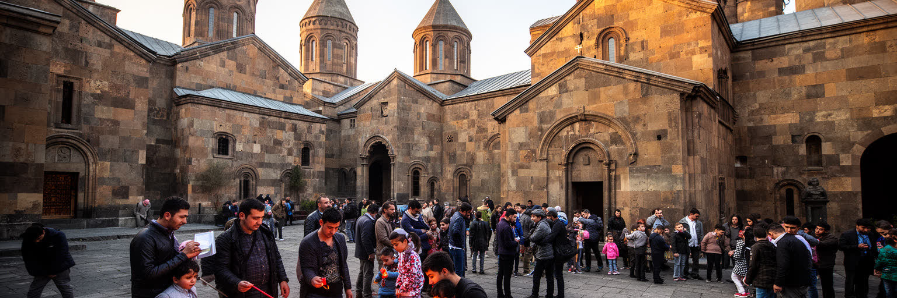
エレバンの宗教生活は、アルメニア使徒教会を中心に、家族、国家、記憶、祝祭を結びます。聖グリゴル・ルサヴォリチ大聖堂のような大きな教会は都市の新しい象徴であり、古い小教会や郊外の礼拝堂は、地域の日常に近い祈りの場です。洗礼、結婚、葬儀、復活祭、クリスマス、ヴァルダヴァル、追悼の日には、教会の時間が家族の予定と都市の流れを変えます。アルメニアのキリスト教は観光向けの古い遺産としてだけ存在するのではありません。虐殺の記憶、ディアスポラ、戦争で亡くなった兵士への祈り、貧しい人への支援、学校教育、音楽、聖歌、近郊修道院への巡礼を通じて、現在の社会を支えています。一方で、現代のエレバンには世俗的な若者文化、他宗教の住民、無宗教の生活感覚、教会と政治の距離をめぐる議論もあります。信仰を一枚岩として語ると、都市の多様な経験は見えません。教会の鐘は街に深い時間を与えますが、住民はカフェ、大学、職場、オンライン空間でも自分の価値観を作っています。エレバンを読むには、石造教会の美しさだけでなく、キャンドルを灯す人、葬儀へ向かう家族、結婚写真を撮る若者、水を掛け合う子ども、戦争後の祈りの重さを見る必要があります。宗教は過去を守るだけでなく、不安定な時代に共同体を保つ言葉でもあります。その近さが、首都の日常に静かな芯を与えています。
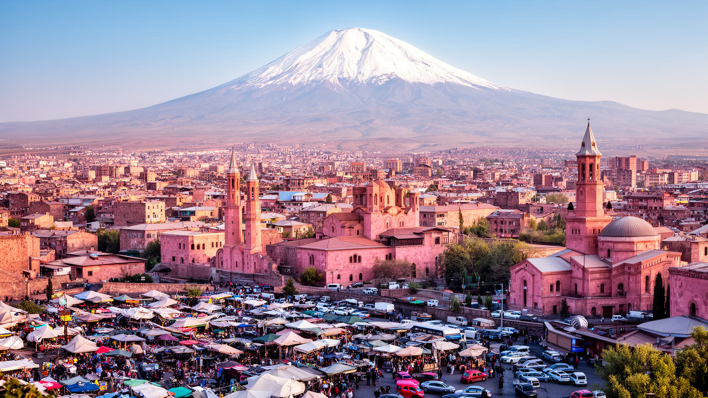
エレバンを一つの印象で語ることはできません。アララト山を望む美しい首都であり、ソ連期の計画都市であり、古いキリスト教文化を抱く街であり、虐殺の記憶とディアスポラを結ぶ場所であり、IT産業と観光で外へ開こうとする都市でもあります。旅行者は共和国広場、カスケード、博物館、近郊修道院、食市場に惹かれますが、住民にとっての都市は、家賃、給料、水、兵役への不安、交通、教育、家族の海外移住、帰還者との共存として現れます。首都機能が強い分、国の政治と危機はすぐ街路に現れます。抗議、追悼、祝祭、選挙、難民支援は、広場や教会や学校を通じて日常の近くに来ます。一方で、エレバンには重い記憶だけではない軽さもあります。夜のカフェ、ジャズ、メディアの会話、階段の散歩、スポーツ観戦、果物の市場、若い技術者の会話、子どもの遊ぶ中庭が、都市を未来へ動かします。この街を読むには、象徴としてのアララトと、漏水した水道管や高い家賃のような生活の細部を同じ地図に置く必要があります。国家の物語は大きいですが、都市を支えるのは毎朝バスに乗り、店を開け、授業を受け、祈り、コードを書き、夕方の風を待つ人々です。小さな会話も手がかりです。石の色が夕日に変わる時、エレバンは古い記憶を抱えながら、なお実務的に明日の生活を組み立てる首都として見えてきます。